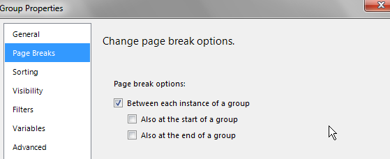

1：首先进行分组，分组表达式为CEILING(RowNumber(Nothing)/50)
注：50是一页放50条数据，一页想放多少条，就改成多少
2：在Group Properties中可以看到如下信息：
3：点到Page Breaks,勾上“Between each instance of a group”

4：将Sorting中的CEILING(RowNumber(Nothing)/50) 内容删除
5：将分组的列删除，选择“Delete columns only”
6:预览报表，应该就可以看到分页成功了